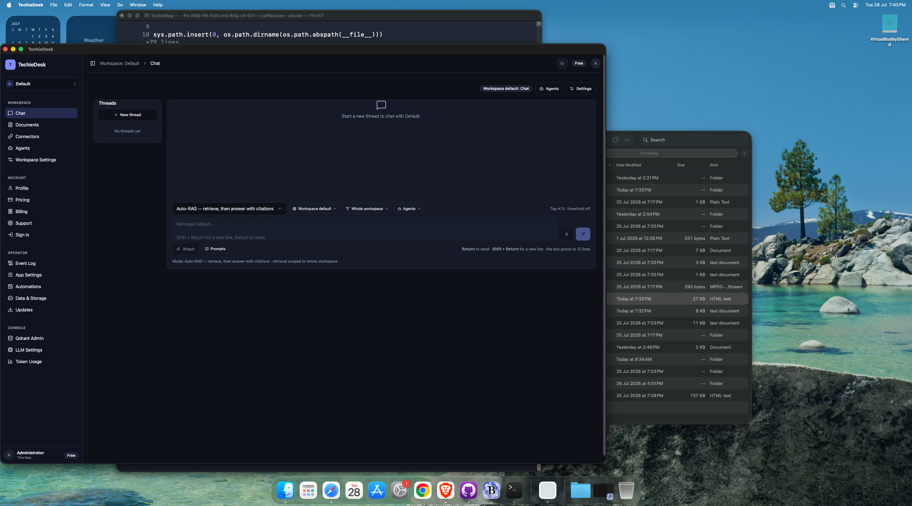
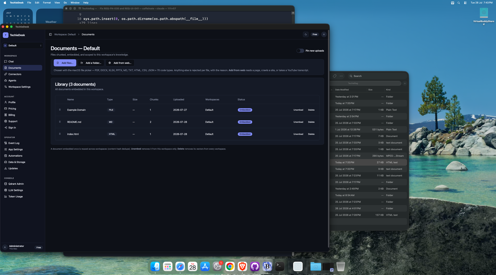
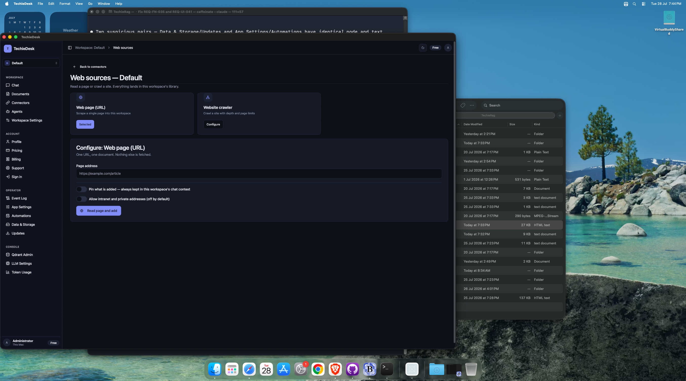
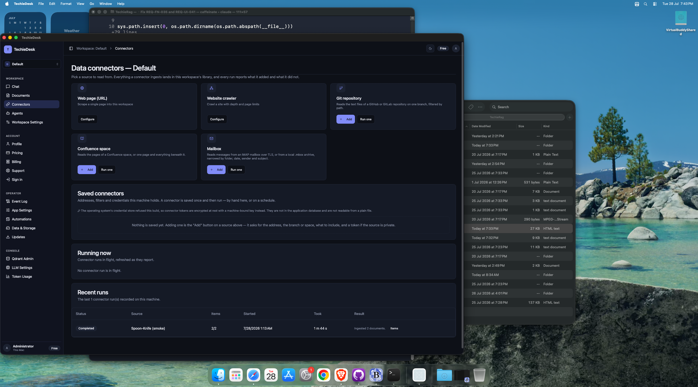
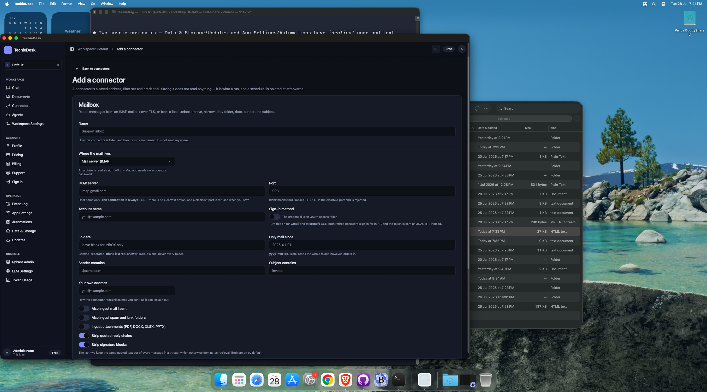
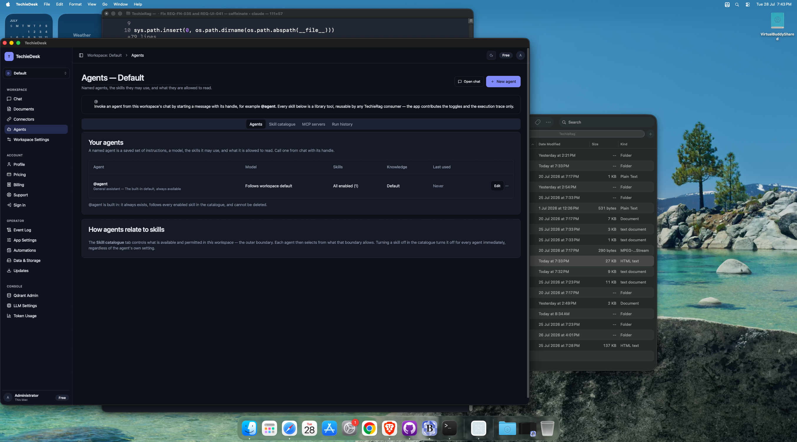
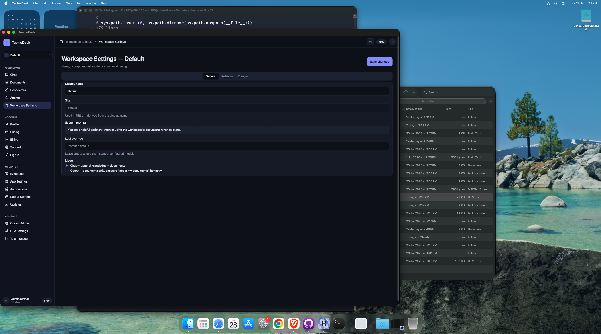

TechieDesk DevGuide — Workspace
/workspace/{Slug}— WorkspaceChat/workspace/{Slug}/documents— DocumentLibrary/workspace/{Slug}/documents/web— AddFromWeb/workspace/{Slug}/connectors— ConnectorsHub/workspace/{Slug}/connectors/new— ConnectorEdit/workspace/{Slug}/agents— WorkspaceAgents/workspace/{Slug}/settings— WorkspaceSettings
Generated 2026-07-28 · reflects code as built. ← index
✅ Runtime-verified 2026-07-29 — re-swept on the live Mac Catalyst head over Appium (
mac2), bound byappPathto the universal Release bundle, driving 28 of the 30 screens at 1600×1240 and 1024×720 (the REQ-UI-041 floor). EveryObservedline below is what the running app did;Visual (§4b)is the overlap / zero-size / off-viewport geometry check plus a human look at the screenshot. Screens that could not be reached say so and are not claimed as verified. Screenshots:test-results/ui-verify/.
7 screen(s) in this area.
/workspace/{Slug} — WorkspaceChat#
- File:
apps/TechieDesk/Components/Pages/WorkspaceChat.razor(1787 lines) - Reached via: Sidebar → WORKSPACE → Chat
- Observed: renders ✓ (runtime-confirmed 2026-07-29) — 109 a11y content nodes / 68 interactive, all composer controls present: mode Select, model override, retrieval scope, agents, Attach, Prompts, mic, send, Threads panel. Reached from the sidebar AND from the native Go menu.
- Visual (§4b): looks-right ✓ (runtime-confirmed 2026-07-29) — 1600×1240 and 1024×720: 0 interactive overlaps, 0 zero-size boxes, composer reflows to two rows at 1024 with no horizontal overflow.
- Known issues (2026-07-29): Streamed answers, citation chips, read-aloud and the agent execution trace could not be exercised: no chat provider is reachable on this host (LLM Settings Source = None; no Ollama/LM Studio listening).

Controls#
| Component | Uses | Razor line(s) |
|---|---|---|
<LucideIcon> | 27 | 20, 30, 63, 69… |
<Button> | 18 | 62, 63, 68, 69… |
<DropdownMenu> | 5 | 112, 305, 333, 358… |
<Dialog> | 5 | 441, 457, 471, 506… |
<Alert> | 4 | 19, 20, 29, 30 |
<Spinner> | 3 | 42, 274, 517 |
<Badge> | 3 | 59, 208, 259 |
<Card> | 2 | 78, 150 |
<Select> | 1 | 290 |
<Textarea> | 1 | 388 |
<Input> | 1 | 447 |
<Checkbox> | 1 | 485 |
<Label> | 1 | 488 |
<FileUpload> | 1 | 513 |
Data lineage — Razor → injected service#
| Call | Service (as injected) | Razor line(s) |
|---|---|---|
AgentRegistry.ListAsync() | IAgentRegistry | 902 |
AgentRegistry.MarkUsedAsync() | IAgentRegistry | 1378 |
AgentRegistry.PermittedSkillsAsync() | IAgentRegistry | 1530 |
AgentRegistry.ResolveAsync() | IAgentRegistry | 1429, 1510 |
Logger.LogError() | ILogger<WorkspaceChat> | 685, 806, 834… |
Logger.LogWarning() | ILogger<WorkspaceChat> | 887, 907, 1194 |
Nav.NavigateTo() | NavigationManager | 1165, 1754, 1756 |
Nav.ToAbsoluteUri() | NavigationManager | 918 |
Rag.GetConversationStoreAsync() | TechieRagManager | 672, 695, 708… |
Rag.GetLlmProviderAsync() | TechieRagManager | 1298 |
Rag.GetTokenTrackerAsync() | TechieRagManager | 1312 |
Rag.GetWorkspaceManagerAsync() | TechieRagManager | 852, 1040, 1288 |
Rag.ListDocumentsAsync() | TechieRagManager | 858 |
RagConfig.LoadConfigAsync() | TechieRagConfigService | 877 |
ToastService.Error() | ToastService | 779, 807, 835… |
ToastService.Success() | ToastService | 802, 830, 1068 |
Workspaces.ResolveBySlugAsync() | IWorkspaceService | 660 |
Injected services: TechieRagManager, TechieRagConfigService, IAgentRegistry, IWorkspaceService, ToastService, NavigationManager, IJSRuntime, ILogger<WorkspaceChat>
Conditional render guards: 17 @if blocks — the render-truth risk on this screen. First few:
@if (notFound)(line 17)@if (Workspaces.CanManageWorkspaces)(line 66)@if (threads.Count > 0)(line 82)
/workspace/{Slug}/documents — DocumentLibrary#
- File:
apps/TechieDesk/Components/Pages/DocumentLibrary.razor(822 lines) - Reached via: Sidebar → WORKSPACE → Documents
- Observed: renders ✓ (runtime-confirmed 2026-07-29) —
Library (3 documents)with 3 real rows; Name, Type, Chunks, Uploaded, Workspaces, Status (Embeddedbadges) and the Unembed/Delete actions all populated; count badge matches visible rows.Sizecolumn: renders-empty (DEFECT — see Known issues). - Visual (§4b): looks-right ✓ (runtime-confirmed 2026-07-29) — 1600 and 1024: 0 overlaps, 0 zero-size, table stays inside its card at 1024.
- Known issues (2026-07-29): 🔴 renders-empty (DEFECT, 2026-07-29) —
DataTableColumn Size(DocumentLibrary.razor:194) shows—on every row.SizeFromMetadata(:735) probesFileSize/Size/fileSize/size/ByteSizeinDocument.Metadataand no ingestion path writes any of them, so the fallback—is what every document will ever show. REQ-UI-021 names size as a required column. Corroborated on/settings/data, where theuploadsartefact readsnot created yet.

Controls#
| Component | Uses | Razor line(s) |
|---|---|---|
<Button> | 8 | 78, 82, 87, 108… |
<LucideIcon> | 7 | 21, 32, 79, 83… |
<Badge> | 7 | 126, 129, 132, 135… |
<Alert> | 6 | 20, 21, 31, 32… |
<Spinner> | 3 | 40, 63, 162 |
<Card> | 3 | 75, 104, 153 |
<FileUpload> | 2 | 69, 289 |
<Switch> | 1 | 53 |
<Label> | 1 | 54 |
<Progress> | 1 | 117 |
<DataTable> | 1 | 176 |
<Dialog> | 1 | 239 |
Data lineage — Razor → injected service#
| Call | Service (as injected) | Razor line(s) |
|---|---|---|
Logger.LogError() | ILogger<DocumentLibrary> | 335, 422, 459… |
Nav.NavigateTo() | NavigationManager | 442 |
Rag.DeleteDocumentAsync() | TechieRagManager | 696 |
Rag.GetWorkspaceManagerAsync() | TechieRagManager | 355, 511, 614… |
Rag.InitializeAsync() | TechieRagManager | 330 |
Rag.ListDocumentsAsync() | TechieRagManager | 366 |
ToastService.Error() | ToastService | 423, 460, 469… |
ToastService.Success() | ToastService | 622, 652, 698 |
Workspaces.ResolveBySlugAsync() | IWorkspaceService | 322 |
Injected services: TechieRagManager, IWorkspaceService, ToastService, NavigationManager, ILogger<DocumentLibrary>
Conditional render guards: 8 @if blocks — the render-truth risk on this screen. First few:
@if (loadError is not null)(line 18)@if (canManage)(line 50)@if (isDownloadingModel)(line 60)
/workspace/{Slug}/documents/web — AddFromWeb#
- File:
apps/TechieDesk/Components/Pages/AddFromWeb.razor(687 lines) - Reached via: Documents → “Add from web”
- Observed: renders ✓ (runtime-confirmed 2026-07-29) — source picker (Web page / Website crawler), page-address Input, private-address Switch, pin Switch and
Read page and addall present. - Visual (§4b): looks-right ✓ (runtime-confirmed 2026-07-29) — 1600 and 1024: 0 overlaps, 0 zero-size.

Controls#
| Component | Uses | Razor line(s) |
|---|---|---|
<Alert> | 18 | 16, 17, 26, 27… |
<LucideIcon> | 14 | 17, 27, 47, 59… |
<Label> | 7 | 114, 125, 130, 138… |
<Button> | 4 | 46, 90, 211, 217 |
<Card> | 4 | 79, 107, 232, 286 |
<Input> | 4 | 115, 126, 131, 153 |
<Switch> | 3 | 137, 172, 181 |
<Spinner> | 2 | 35, 242 |
<Badge> | 2 | 244, 302 |
<Separator> | 1 | 169 |
<Progress> | 1 | 238 |
<DataTable> | 1 | 294 |
Data lineage — Razor → injected service#
| Call | Service (as injected) | Razor line(s) |
|---|---|---|
Ingestion.IngestAsync() | IWebIngestionService | 628 |
Logger.LogError() | ILogger<AddFromWeb> | 480, 656 |
Nav.NavigateTo() | NavigationManager | 486 |
ToastService.Error() | ToastService | 638, 642, 652… |
ToastService.Success() | ToastService | 632 |
Workspaces.ResolveBySlugAsync() | IWorkspaceService | 469 |
Injected services: IWebIngestionService, IWorkspaceService, ToastService, NavigationManager, ILogger<AddFromWeb>
Conditional render guards: 12 @if blocks — the render-truth risk on this screen. First few:
@if (loadError is not null)(line 14)@if (!canManage)(line 56)@if (sourceKind == "site")(line 118)
/workspace/{Slug}/connectors — ConnectorsHub#
- File:
apps/TechieDesk/Components/Pages/ConnectorsHub.razor(1399 lines) - Reached via: Sidebar → WORKSPACE → Connectors
- Observed: renders ✓ (runtime-confirmed 2026-07-29) — 5 source cards,
Saved connectorswith a real mailbox connector (last run, item count, Edit/Test/Sync/Delete),Running nowhonest empty state, andRecent runswith 5 populated rows (Status/Source/Items/Started/Took/Result). - Visual (§4b): looks-right ✓ (runtime-confirmed 2026-07-29) — 1600 and 1024: 0 overlaps, cards reflow cleanly.

Controls#
| Component | Uses | Razor line(s) |
|---|---|---|
<Alert> | 28 | 18, 19, 28, 29… |
<LucideIcon> | 26 | 19, 29, 53, 76… |
<Button> | 13 | 87, 100, 107, 293… |
<Badge> | 7 | 218, 223, 227, 231… |
<Card> | 6 | 73, 168, 359, 498… |
<Label> | 5 | 391, 429, 435, 440… |
<Spinner> | 4 | 37, 333, 469, 514 |
<Input> | 3 | 430, 436, 441 |
<DataTable> | 2 | 586, 646 |
<Select> | 1 | 395 |
<Separator> | 1 | 446 |
<Switch> | 1 | 449 |
<Progress> | 1 | 531 |
Data lineage — Razor → injected service#
| Call | Service (as injected) | Razor line(s) |
|---|---|---|
Logger.LogError() | ILogger<ConnectorsHub> | 919, 943, 972… |
ToastService.Error() | ToastService | 1043, 1092, 1098… |
ToastService.Show() | ToastService | 1039, 1251 |
ToastService.Success() | ToastService | 1086, 1148, 1203 |
Workspaces.ResolveBySlugAsync() | IWorkspaceService | 932 |
Injected services: IServiceProvider, IWorkspaceService, ToastService, NavigationManager, ILogger<ConnectorsHub>
Conditional render guards: 26 @if blocks — the render-truth risk on this screen. First few:
@if (loadError is not null)(line 16)@if (!canManage)(line 50)@if (tile.Href is { } href)(line 81)
/workspace/{Slug}/connectors/new — ConnectorEdit#
- File:
apps/TechieDesk/Components/Pages/ConnectorEdit.razor(1277 lines) - Reached via: Connectors → a source card’s “Add”
- Observed: renders ✓ (runtime-confirmed 2026-07-29) — Git-repository form with Name, Project path, Branch, include/exclude globs, Access token, API/Web base URL, private-network Switch, pin Switch, Save/Test/Sync. Reached from a source card's
Addlink. - Visual (§4b): looks-right ✓ (runtime-confirmed 2026-07-29) — 1600 and 1024: 0 overlaps, 0 zero-size.

Controls#
| Component | Uses | Razor line(s) |
|---|---|---|
<Label> | 36 | 148, 163, 183, 193… |
<Alert> | 26 | 18, 19, 28, 29… |
<Input> | 21 | 149, 184, 197, 208… |
<LucideIcon> | 18 | 19, 29, 44, 57… |
<Switch> | 10 | 297, 367, 371, 375… |
<Button> | 5 | 43, 126, 612, 620… |
<Separator> | 4 | 157, 322, 462, 531 |
<Card> | 3 | 96, 118, 141 |
<Spinner> | 2 | 37, 637 |
<Select> | 2 | 168, 252 |
<RadioGroup> | 1 | 409 |
Data lineage — Razor → injected service#
| Call | Service (as injected) | Razor line(s) |
|---|---|---|
Logger.LogError() | ILogger<ConnectorEdit> | 893, 948, 1145… |
Nav.NavigateTo() | NavigationManager | 1227, 1248 |
ToastService.Error() | ToastService | 1141, 1147, 1180… |
ToastService.Success() | ToastService | 1136, 1176, 1226 |
Workspaces.ResolveBySlugAsync() | IWorkspaceService | 881 |
Injected services: IServiceProvider, IWorkspaceService, ToastService, NavigationManager, ILogger<ConnectorEdit>
Conditional render guards: 18 @if blocks — the render-truth risk on this screen. First few:
@if (loadError is not null)(line 16)@if (!canManage)(line 54)@if (registry is null)(line 65)
/workspace/{Slug}/agents — WorkspaceAgents#
- File:
apps/TechieDesk/Components/Pages/WorkspaceAgents.razor(1004 lines) - Reached via: Sidebar → WORKSPACE → Agents
- Observed: renders ✓ (runtime-confirmed 2026-07-29) — all four tabs driven: Agents (table with the built-in
@agentrow, Model/Skills/Knowledge/Last-used populated), Skill catalogue (8 skills with toggles, guardrail limits,Show the execution trace in chat), MCP servers (honest “not available yet — REQ-RAG-023”), Run history (honest “Agent runs are not persisted yet”). - Visual (§4b): looks-right ✓ (runtime-confirmed 2026-07-29) — 1600 and 1024: 0 overlaps, 0 zero-size on every tab.
- Known issues (2026-07-29): REQ-RAG-006 / REQ-UI-034 evidence is NOT obtainable here. Run history states that runs are not persisted and that the execution trace lives only in the chat thread while it is open; with no chat provider reachable no trace can be produced. The trace is therefore unexercised, not confirmed.

Controls#
| Component | Uses | Razor line(s) |
|---|---|---|
<LucideIcon> | 14 | 17, 27, 50, 54… |
<Alert> | 12 | 16, 17, 26, 27… |
<Button> | 11 | 49, 50, 53, 54… |
<Switch> | 11 | 208, 262, 266, 270… |
<Label> | 11 | 212, 263, 267, 271… |
<Card> | 6 | 80, 179, 196, 238… |
<Badge> | 5 | 220, 222, 447, 450… |
<Input> | 3 | 350, 357, 372 |
<Tabs> | 2 | 70, 337 |
<Dialog> | 2 | 319, 546 |
<Select> | 2 | 386, 465 |
<Spinner> | 1 | 38 |
<DataTable> | 1 | 90 |
<DropdownMenu> | 1 | 128 |
<Textarea> | 1 | 378 |
Data lineage — Razor → injected service#
| Call | Service (as injected) | Razor line(s) |
|---|---|---|
Agents.DeleteAsync() | IAgentRegistry | 917 |
Agents.ListAsync() | IAgentRegistry | 645 |
Agents.SaveAsync() | IAgentRegistry | 831, 862, 894 |
Logger.LogError() | ILogger<WorkspaceAgents> | 635, 709, 844… |
Logger.LogWarning() | ILogger<WorkspaceAgents> | 676 |
Nav.NavigateTo() | NavigationManager | 994, 1002 |
RagConfig.LoadConfigAsync() | TechieRagConfigService | 666 |
Skills.GetCatalogueAsync() | IWorkspaceSkillRepository | 647 |
Skills.SetAsync() | IWorkspaceSkillRepository | 699 |
ToastService.Error() | ToastService | 710, 840, 845… |
ToastService.Success() | ToastService | 703, 835, 864… |
Workspaces.ResolveBySlugAsync() | IWorkspaceService | 623 |
Injected services: IWorkspaceService, IAgentRegistry, IWorkspaceSkillRepository, TechieRagConfigService, ToastService, NavigationManager, ILogger<WorkspaceAgents>
Conditional render guards: 9 @if blocks — the render-truth risk on this screen. First few:
@if (notFound)(line 14)@if (row.IsBuiltIn)(line 146)@if (!implementedSkills.Contains(skill.Name))(line 215)
/workspace/{Slug}/settings — WorkspaceSettings#
- File:
apps/TechieDesk/Components/Pages/WorkspaceSettings.razor(279 lines) - Reached via: Sidebar → WORKSPACE → Workspace Settings
- Observed: renders ✓ (runtime-confirmed 2026-07-29) — all three tabs driven: General (Display name
Default, Slug, System prompt, LLM override, Chat/Query RadioGroup), Retrieval (Top-K, similarity threshold, reranker option), Danger (Delete workspace). - Visual (§4b): looks-right ✓ (runtime-confirmed 2026-07-29) — 1600 and 1024: 0 zero-size; the only geometry hit is a 3×32 px adjacency between the Retrieval and Danger tab hit boxes, invisible in the screenshot — not a visual defect.
- Known issues (2026-07-29): The acceptance clause
membershas no control on this screen. That is by design: REQ-FN-041 deleted the role/capability and user↔workspace assignment stack outright.

Controls#
| Component | Uses | Razor line(s) |
|---|---|---|
<Alert> | 4 | 11, 12, 19, 20 |
<Button> | 4 | 39, 130, 144, 145 |
<Input> | 4 | 58, 63, 74, 113 |
<Card> | 3 | 54, 99, 127 |
<Label> | 3 | 84, 88, 118 |
<LucideIcon> | 2 | 12, 20 |
<Spinner> | 1 | 28 |
<Tabs> | 1 | 43 |
<Textarea> | 1 | 69 |
<RadioGroup> | 1 | 81 |
<Switch> | 1 | 117 |
<Dialog> | 1 | 137 |
Data lineage — Razor → injected service#
| Call | Service (as injected) | Razor line(s) |
|---|---|---|
Logger.LogError() | ILogger<WorkspaceSettings> | 210, 253, 274 |
Nav.NavigateTo() | NavigationManager | 244, 270 |
ToastService.Error() | ToastService | 254, 275 |
ToastService.Success() | ToastService | 239, 269 |
Workspaces.DeleteWorkspaceAsync() | IWorkspaceService | 267 |
Workspaces.ResolveBySlugAsync() | IWorkspaceService | 192 |
Workspaces.SlugFor() | IWorkspaceService | 199, 241 |
Workspaces.UpdateWorkspaceAsync() | IWorkspaceService | 238 |
Injected services: IWorkspaceService, ToastService, NavigationManager, ILogger<WorkspaceSettings>
Conditional render guards: 1 @if blocks — the render-truth risk on this screen. First few:
@if (accessDenied)(line 9)